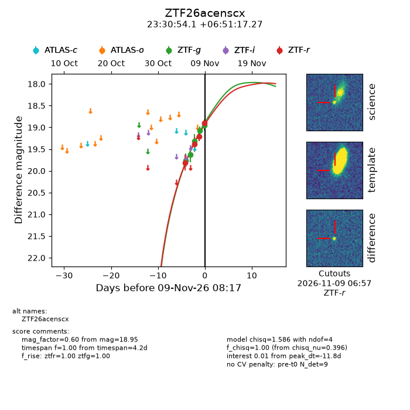
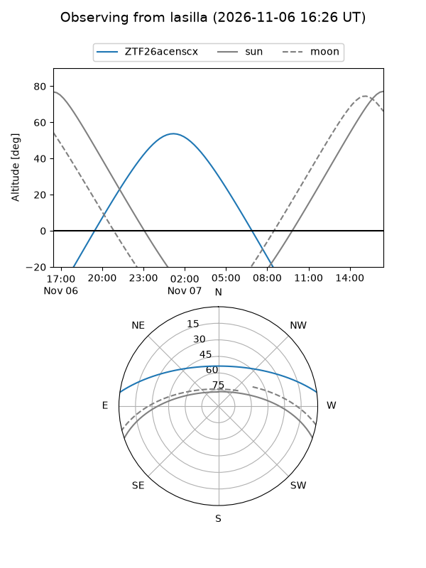
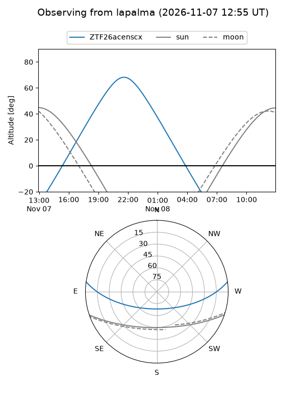
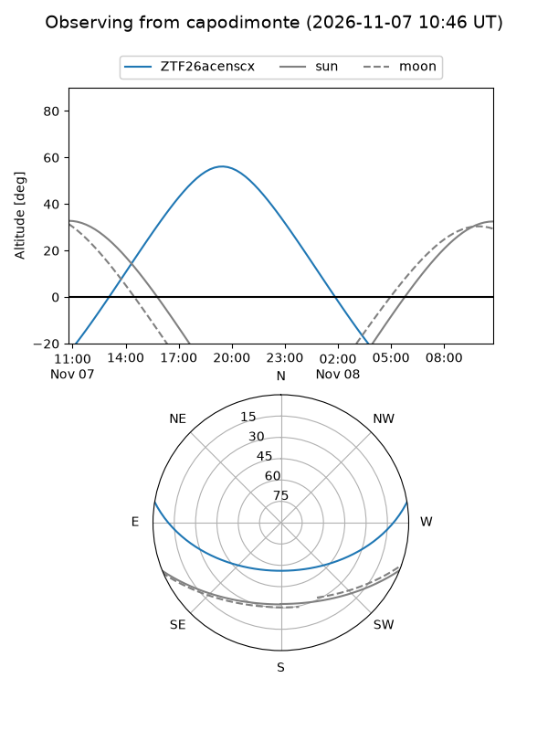
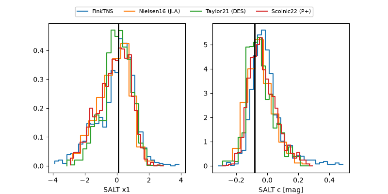

ZTF26acenscx
Target ZTF26acenscx at 2026-11-09 08:20
Aliases and brokers:
FINK-ZTF: ztf.fink-portal.org/ZTF26acenscx
Lasair-ZTF: lasair-ztf.lsst.ac.uk/objects/ZTF26acenscx
ALeRCE-ZTF: alerce.online/object/ZTF26acenscx
Direct TNS query: direct search
alt names
ZTF26acenscx (ztf,fink_ztf)
Coordinates:
equatorial (ra, dec) = 352.7252,+6.85480
equatorial (HMS+DMS) = 23:30:54.05,+06:51:17.27
galactic (l, b) = (90.1797,-50.82347)
Flags:
peak dt: -11.8
Photometry:
last ztfg=18.95, ztfr=18.89
5 ztfg, 4 ztfr detections
Lightcurve

Visibility



Additional plots
